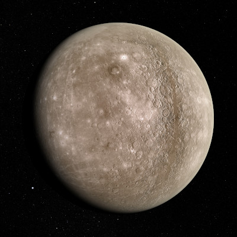

El Sistema Solar

El sistema solar es el sistema planetario que liga gravitacionalmente a un conjunto de objetos astronómicos que giran directa o indirectamente en una órbita alrededor de una única estrella conocida con el nombre de Sol.
La estrella concentra el 99,86 % de la masa del sistema solar, y la mayor parte de la masa restante se concentra en ocho planetas cuyas órbitas son prácticamente circulares y transitan dentro de un disco casi llano llamado plano eclíptico.

Los cuatro planetas más cercanos, considerablemente más pequeños, Mercurio, Venus, Tierra y Marte, también conocidos como los planetas terrestres, están compuestos principalmente por roca y metal. Mientras que los cuatro más alejados, denominados gigantes gaseosos o «planetas jovianos», más masivos que los terrestres, están compuestos de hielo y gases. Los dos más grandes, Júpiter y Saturno, están compuestos principalmente de helio e hidrógeno. Urano y Neptuno, denominados gigantes helados, están formados mayoritariamente por agua congelada, amoniaco y metano. El Sol y los planetas del sistema solar. Los tamaños están a escala, pero no así las distancias.
El Sol es el único cuerpo celeste del sistema solar que emite luz propia, debido a la fusión termonuclear del hidrógeno y su transformación en helio en su núcleo. El sistema solar se formó hace unos 4600 millones de años a partir del colapso de una nube molecular. El material residual originó un disco circunestelar protoplanetario en el que ocurrieron los procesos físicos que llevaron a la formación de los planetas.El sistema solar se ubica en la actualidad en la nube Interestelar Local que se halla en la Burbuja Local del brazo de Orión, de la galaxia espiral Vía Láctea, a unos 28 000 años luz del centro de esta. Concepción artística de un disco protoplanetario
El sistema solar es también el hogar de varias regiones compuestas por objetos pequeños. El cinturón de asteroides, ubicado entre Marte y Júpiter, es similar a los planetas terrestres ya que está constituido principalmente por roca y metal. En este cinturón se encuentra el planeta enano Ceres. Más allá de la órbita de Neptuno están el cinturón de Kuiper, el disco disperso y la nube de Oort, que incluyen objetos transneptunianos formados por agua, amoníaco y metano principalmente. En este lugar existen cuatro planetas enanos: Haumea, Makemake, Eris y Plutón, el cual fue considerado el noveno planeta del sistema solar hasta 2006.
¿Dónde está Plutón?
Plutón es el noveno planeta del Sistema Solar, diga lo que diga Neil DeGrass Simpson.